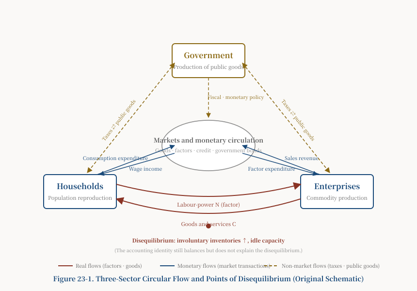
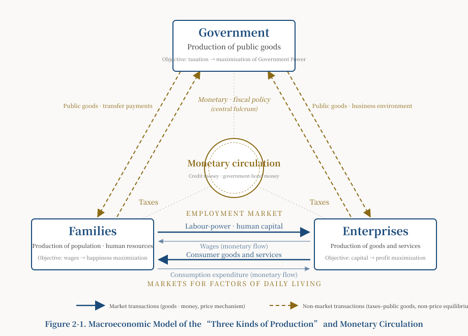

Introduction
Part I discussed, at the micro level, the dialectical movement of the “two kinds of production” carried out by families and enterprises. Part II turns to the macro level. It brings monetary circulation and the production of public goods into the analysis and examines, in aggregate terms, the interaction among the “three kinds of production”—the production of population and human resources with the family as the unit, the production of goods and services with the enterprise as the unit, and the government-led production of public goods—and their effects on economic and social development.
The discussion begins by establishing an accurate understanding of the status and functions of government and public goods. A frequently conflated question must first be clarified: what do mainstream national accounts actually “leave out”, and what are they genuinely unable to measure? The argument of this part can stand only if these two matters are kept distinct. My central claims are as follows.
(1) The production and provision of public goods are indispensable to modern social development and are important components of macroeconomic aggregate supply and aggregate demand.
(2) Government is the principal producer and provider of public goods. Its legitimacy and public credibility derive from its will and capacity to produce public goods with positive effects and curb public bads. Government behaviour and the supply-and-demand relationship of public goods should themselves be objects of macroeconomic inquiry.
(3) Government non-market output is not “impossible to include in GDP”. Under standard national-accounting rules, such output is generally valued at its cost of production—including compensation of employees, intermediate inputs, and consumption of fixed capital—and both government final consumption and government investment enter GDP. What cannot be captured by GDP is not the cost of the services supplied by government, but the value of their social benefits: public safety, rule-of-law order, environmental quality, institutional quality, governance capacity, and their feedback effects on the long-run behaviour of families and enterprises. In particular, taxes are fiscal revenue and compulsory transfers; they cannot be entered directly into GDP as the “price of public goods”.
(4) The limitation of mainstream macroeconomics therefore does not lie in an accounting omission of government expenditure. Rather, national accounts can record government non-market output at cost but cannot adequately measure how public capacity is produced and distributed, or how it feeds back into family population reproduction and enterprise commodity production. This is a question of explanatory power and the limits of measurement, not a matter of an omitted accounting item.
(5) For precisely this reason, the significance of the “three kinds of production” framework is not that it adds an omitted block of government expenditure to GDP. It supplies macroeconomic analysis with an institutional mechanism: how the three systems of social reproduction—family, enterprise, and government—depend on and feed back into one another, and how the spontaneous operation of the market can nevertheless drive them towards structural disequilibrium.
The target of this essay’s criticism is not the claim that “Mankiw ignores government”. On the contrary, Mankiw’s Principles of Economics devotes substantial attention to public-sector economics, government purchases, and fiscal policy. The claim here is more specific: Mankiw does not ignore government or public goods, but mainly assigns government the subordinate roles of correcting market failure, purchasing public goods, and redistributing income. He does not construct the production of public capacity by government, population reproduction by families, and commodity production by enterprises as three coequal and mutually responsive systems of social reproduction. The disagreement is not over whether government should be studied, but over whether government is a patch applied to the market or a third reproductive subject alongside families and enterprises.
Western mainstream economics is grounded in private property rights and the liberal tradition. It therefore tends to position government as a supplement and corrective to the market, weakening systematic study of the supply-and-demand relationship of public goods and progressively narrowing the earlier tradition of “political economy” into the later tradition of “economics”. Mankiw’s textbook is representative in this respect. The discussion below first clarifies the explanatory boundaries of the mainstream framework in Sections I and II, then develops the positive contribution of the “three kinds of production” in Section III and the sections that follow.
Section I. The Circular-Flow Diagram: Correct Accounting, an Inadequate Mechanism
At the beginning of the macroeconomics volume of Principles of Economics, Mankiw presents a circular-flow diagram as a foundational model for macroeconomic analysis.[1] To avoid reproducing copyrighted material, this essay uses an original schematic diagram to present its structure and marks on it the points of disequilibrium with which the present analysis is concerned.

Macroeconomic analysis concerns the aggregation of all households and all enterprises. The circular-flow diagram tells us that the aggregate household and enterprise sectors, together with government purchases, exports, and imports, constitute a multisector circulation of economic flows. On this basis, Mankiw gives the definition of GDP and the well-known income–expenditure identity. According to the Chinese translation, he explains that an economy’s income equals its expenditure because every transaction has two parties, a buyer and a seller; he also states that because every item of expenditure ultimately becomes someone’s income, GDP is the same however it is calculated.[2][3]
A common objection to the income–expenditure identity asks how excess capacity and products that cannot be sold enter GDP, and concludes that aggregate income cannot equal aggregate expenditure. In my view, this objection conflates market clearing with the accounting rules of the national accounts.
Under those rules, goods produced but not sold during the current period enter investment as changes in inventories. The Bureau of Economic Analysis (United States Department of Commerce) expressly includes private fixed investment plus changes in private inventories within gross private domestic investment.[4] At the same time, the wages, profits, and other costs incurred in producing those goods form current income. Unsold goods therefore enter the expenditure side as “investment”, while the remuneration generated in their production enters the income side; the two sides still balance. The equality of the income and expenditure approaches is an accounting identity of the national accounts. It always holds, but does not imply that markets clear, that enterprises are not accumulating unsold inventories, or that aggregate demand is necessarily adequate.
What, then, is missing from Mankiw’s circular-flow diagram? Not the correctness of the identity, but its explanatory power. An accounting identity records events after the fact. It faithfully records the results of disequilibrium—the accumulation of involuntary inventories, idle capacity, and an abnormal expansion of the changes-in-inventories component of investment—but does not supply the generative mechanism of disequilibrium. One hundred million units of unsold goods may sit in warehouses while the identity continues to hold and the accounts continue to balance; yet the identity remains silent about why those goods cannot be sold.
The more precise and forceful criticism can be stated in one sentence: the identity records the results produced by disequilibrium but does not explain how disequilibrium is generated. It cannot tell us why aggregate demand is deficient, why involuntary inventories increase, why capacity lies idle, or how income distribution affects final demand.
Mankiw himself reaches the edge of this question. In the macroeconomics volume, he asks what causes short-run fluctuations in economic activity, but focuses principally on how monetary and fiscal policy affect aggregate-supply and aggregate-demand curves rather than investigating the causes of disequilibrium.[5] He also reports the prevailing view among economists that classical theory describes the long run rather than the short run.[6] Keynes’s original formulation is sharper: “In the long run we are all dead.” In the sentence that follows, he criticizes economists for setting themselves too easy and useless a task if, in tempestuous seasons, they can say only that the ocean will be calm again after the storm has long passed.[7] Mankiw goes on to present deficient aggregate demand for goods and services as the central explanation for recessions and depressions.[8]
Keynes’s judgement is correct. But the inquiry can go further: what causes “deficient aggregate demand”? In my view, “deficient demand” and “overproduction” are two sides of the same problem—deficient demand from the standpoint of families, and overproduction from that of enterprises. At a deeper level, the spontaneous operation of market mechanisms creates disequilibrium between the two kinds of production carried out by families and enterprises, resulting in Productive Forces Running Ahead, Life-Reproduction Capacity Lagging Behind. Part I of this trilogy has already explained this point, so it will not be repeated here. The next task is to bring government, the third party, into the framework.
Section II. Government Non-Market Production: Already Included in GDP, but Its Social Value Is Not Fully Measured
Part I analysed the dialectical movement of the two kinds of production and reached three conclusions. First, for five reasons, a laissez-faire market economy tends to produce Productive Forces Running Ahead, Life-Reproduction Capacity Lagging Behind. Second, technological progress in enterprises changes supply and demand in the employment market, which in turn changes household child-rearing patterns and the overall pattern of population growth. Third, household wages failing to keep pace with enterprise profits, thereby producing deficient effective demand, underconsumption, and disequilibrium between the two kinds of production, is a persistent tendency of the market economy.
There are two paths for dealing with market failure. One is market mechanisms plus economic crisis, under which periodic collapse forcibly restores balance at the cost of immense economic and social destruction and population loss; this path is unacceptable. The other is market mechanisms plus government intervention, with government as a third party providing a buffer and regulation. This essay discusses the latter—but doing so first requires a clear account of “government as the third party”.
1. Rational Government Behaviour: Power Maximization and Its Conditional Consequences
“Government” here means government in the broad sense. Macroeconomic inquiry cannot avoid examining its organizational character, functions, objectives, and behaviour, because government behaviour is a major variable affecting the macroeconomy.
Government’s rational objective may be hypothesized as the maximization of Government Power and its sustainability. A qualification must immediately be added, however, or this hypothesis will slide into an excessively optimistic conclusion.
One overly smooth line of reasoning runs as follows: government pursues power maximization; consolidating that power requires it to safeguard the public interest; it will therefore provide public goods with positive effects. This chain can stand only as a conditional proposition, not as a law. Power can be consolidated by more than one path. In addition to providing public goods with positive effects, government may rely on coercion, control of information, resource rents, and coalitions of interest. These means can likewise perpetuate power while failing to advance—and even harming—the public interest. T-3, Heheism (hehe: harmony-and-union), has already established the conditions under which a third party may be captured, collude, engage in rent-seeking, or degenerate. The present essay must remain consistent with that analysis:

The model treats families, enterprises, and government as three interdependent systems of social reproduction. Families reproduce population and labour-power; enterprises produce goods and services; government produces public capacity—institutions, the rule of law, security, infrastructure, and governance. Their distinctions and connections appear in three respects.
First, the visible hand of government clasps the invisible hand of the market. Non-market provision of public goods is added to the market-based supply and demand between families and enterprises. Market and political mechanisms become intertwined, changing the internal structure of equilibrium between aggregate supply and aggregate demand.
Second, an intermediate pivot—government—appears between aggregate supply and demand in the two kinds of production undertaken by families and enterprises. Like the fulcrum of a balance or the central axis of a pendulum, it provides an adjustable intermediate point for the dialectical movement of the two poles. The preceding conditional proposition must immediately be restated: whether this pivot can buffer and regulate depends on whether government is subject to effective checks and balances by families and enterprises. Without them, the pivot itself may be captured by one side and may even amplify disequilibrium.
Third, government has two policy instruments for regulation: monetary policy and fiscal policy. Their intervention means that the issuance and circulation of money no longer depend solely on the requirements of commodity circulation, but are also affected by macroeconomic regulation. This leads to the discussion of money and public finance in Section IV.
2. Seven Sets of Macroeconomic Transmission Relationships
The macroeconomy is the unity of the real and monetary economies. From the perspective of the “three kinds of production”, its internal structure can be decomposed into seven interrelated sets of supply-and-demand and transmission relationships. These belong to different statistical levels—real goods, labour-power, public goods, credit, government bonds, foreign exchange, and so forth—and cannot simply be added together as the “sum of macroeconomic aggregate supply and demand”. Doing so would generate serious double counting, since financial and goods-market flows already overlap. They are seven interrelated and mutually transmitting relationships, not additive components.
1. Markets for factors of daily living: supply and demand for consumer goods and the formation of the CPI, connected with household consumption and saving and with the quantity, quality, structure, and distribution of population and labour-power reproduction.
2. Markets for factors of production: supply and demand for capital goods and the formation of the PPI, connected with enterprise profits, saving, investment, and the upgrading of industrial structure.
3. Employment market: supply and demand for labour-power as embodied human capital and as a commodity, connected with employment, unemployment, wages, and the primary distribution of national income between wages and profits.
4. Supply and demand of public goods: government-led non-market provision, connected with taxation and public finance, redistribution, and transfer payments.
5. Credit market: the issuance and circulation of bank credit money based on commercial credit, connected with prices, interest rates, liquidity, inflation, and deflation.
6. Government-bond market: the issuance and circulation of government bonds based on state credit, connected with fiscal budgets, interest rates, debt structure, and medium- and long-run expectations.
7. Foreign-exchange and international-trade markets: foreign-exchange supply and demand and exchange-rate movements corresponding to imports and exports.
Monetary circulation links these seven sets of relationships, so that a change in one affects the whole. This is precisely why monetary and fiscal policy are effective levers for macroeconomic regulation. Yet because the relationships belong to different levels and overlap, they cannot be added arithmetically into a single total of “aggregate supply and demand”. This essay understands them as a network of mutual transmission, not an additive ledger.
Section IV. Public Finance and Money: From the “Anchor of Government Bonds” to Fiscal Space
Any discussion of public finance and money must first separate three matters that are easily conflated: debt financing, bank credit creation, and central-bank money creation.
1. Government Bonds Are Not Money
Government bonds are normally government debt and financial assets; they do not automatically constitute money. Different financing methods have entirely different monetary effects and cannot all be described as “government-bond money”:
- Government bonds sold to the non-bank public: normally an asset swap, as the public purchases bonds with deposits, without directly increasing the monetary base.
- Government bonds purchased by commercial banks: may change the composition of bank assets; the monetary effect depends on reserves and lending behaviour.
- Government bonds purchased by the central bank: create reserves or base money.
- Direct fiscal financing from the central bank: the typical form of deficit monetization.
The IMF’s classification of fiscal-deficit financing likewise distinguishes financing by the central bank, by banks or the non-bank sector, and from abroad. Only central-bank financing directly creates high-powered money.[14] Government bonds therefore cannot be assumed automatically to form part of the money supply, nor can central-bank bond purchases be equated directly with commercial-bank credit-money creation. Credit creation in a modern banking system is likewise not rigidly constrained by a mechanical “saving plus money multiplier” relationship.
2. The “Hidden Anchor”: A Metaphor, Not an Accounting Item
This essay uses the “hidden anchor” of government bonds as a metaphor for public capacities that can enhance future productive capacity, the tax base, and state credit. The metaphor has explanatory value, but cannot be treated as an accounting basis that can be directly valued and used to calculate the scale of bond issuance.
Public goods, the demographic dividend, and the potential value of land cannot directly serve as a “government-bond anchor” valued by the fiscal authorities. Nor can the value of public goods and a “reasonable deficit size” be inferred solely from figures such as “5 per cent unemployment and 2 per cent inflation”. That would misuse a rhetorical metaphor as an exact formula. Fiscal space is not determined by a single “anchor”, but jointly constrained by a set of factors:
the state’s capacity to tax; the rate of economic growth; the relationship between the interest rate and the growth rate (r and g); the scale and structure of debt; the monetary system; social trust; and deployable real resources, including idle capacity, labour-power, and technological potential.
The “hidden anchor” may be retained as a metaphor on this basis, but its meaning must be defined precisely:
The “hidden anchor” is neither legally pledged collateral for government bonds nor a directly measurable basis for issuing money. It denotes public capacities capable of enhancing future productive capacity, the tax base, and state credit. Public goods are not collateral or an accounting anchor for government bonds. They are important uses of fiscal expenditure that determine its social return. Future debt-service capacity is more secure when government spends on public capacities that can enhance future productive capacity and the tax base.
3. Fiscal Space and Its Real Constraints
With these relationships clarified, the fiscal position of this essay can be stated accurately. Where resources are idle—where excess capacity and unemployment exist—expanding public investment and increasing social-security expenditure and transfer payments can indeed generate effective demand and alleviate disequilibrium between supply and demand, as Keynes argued. This space is not unlimited, however, and does not arise from the illusion that “government bonds are money”. It is constrained by the factors listed above.
This essay cites Modern Monetary Theory cautiously rather than endorsing it. MMT advances propositions including the monetization of fiscal deficits, spending prior to revenue, and full employment rather than budget balance as an objective.[15] These views remain highly controversial. What can be said with confidence is that deficit monetization is not suitable in every environment. It can produce hyperinflation in a shortage economy characterized by material scarcity and excess demand; where capacity is excessive and domestic and external demand are deficient, the scope for fiscal expansion is comparatively greater. Its direction and limits depend on the real constraints listed above, not on a formula applied mechanically.
4. Government’s Position between Labour and Capital: Not “Neutral”, but a Constrained Regulator
From the perspective of the “three kinds of production”, household labour-power and enterprise products enter the market as commodities, are priced by the market, and are included in GDP. Government public goods enter GDP at cost, while the value of their social benefits is difficult to measure fully.
From the perspective of the two kinds of production, the micro-foundation of the macroeconomy is the contradictory movement of labour and capital, wages and profits. It has three possible configurations: strong capital and weak labour, strong labour and weak capital, or balance between labour and capital, corresponding to three patterns in the division of the economic “cake”. At the macro level these appear as three states of aggregate supply and demand: shortage, in which demand exceeds supply, as under the planned economy; surplus, in which supply exceeds demand, the persistent tendency of the market economy; and balance between supply and demand. There are two paths to balance—market mechanisms plus economic crisis and market mechanisms plus government intervention. The significance of introducing government as the intermediate pivot lies in the latter path.
Government is not a naturally neutral subject. It makes rules, produces public goods, undertakes large-scale procurement, and levies taxes; it is itself a party with interests at stake. In my view, government should maintain the governance capacity necessary under institutional constraints, ensure procedural openness, and accept checks and balances from families and enterprises. Government has an incentive to regulate relations between labour and capital and seek equilibrium between aggregate supply and demand because both the “exploitation of labour by capital” and the “erosion of profits by wages” will, in the long run, damage tax sources and the tax base and therefore government’s own objectives. Yet whether this incentive is translated into action favourable to the public interest still depends on effective checks and balances. Ultimately, this is a problem of making and dividing the economic cake and seeking balanced development between Life-Reproduction Capacity and Productive Forces.
Section V. China’s Deficient Domestic Demand: Data-Based Diagnosis and Competing Explanations
After more than forty years of rapid growth, China’s economy faces downward pressure, most visibly in excess capacity, deficient demand, and weakened expectations. Compared with the “shortage economy” of the planned-economy period, when demand exceeded supply, China has entered a structural period of deficient demand and relative surplus supply. From the perspective of the “three kinds of production”, the problem can be summarized in two major symptoms. Before presenting this essay’s explanation, however, it must be acknowledged that deficient domestic demand has multiple causes. The distribution–reproduction explanation advanced here is one among them, not the only one.
1. Two Major Symptoms and a Data-Based Diagnosis
The first symptom lies in the real economy: enterprise production has been emphasized while household consumption has been relatively neglected, creating a period-specific condition of Productive Forces Running Ahead, Life-Reproduction Capacity Lagging Behind.
The most typical phenomenon is that GDP per capita has continued to rise while household consumption as a share of GDP—the household consumption rate—has remained low. China’s GDP per capita rose from less than USD 1,000 in 2000 to nearly USD 13,400 in 2024, while over the same period the household consumption rate fell from approximately 46 per cent to around 38 per cent.[16] The measure used here is the World Bank category “Households and NPISHs Final consumption expenditure (% of GDP)”. It must not be confused with “final consumption expenditure as a share of GDP”, which includes government consumption.
| Year | China’s GDP per capita (current USD) | Household consumption as a share of GDP |
| 2000 | approx. 960 | 46.8% |
| 2010 | approx. 4,550 | 34.6% |
| 2022 | approx. 12,700 | 37.8% |
A low household consumption rate shows first that the household-consumption pole of final demand is relatively weak. By itself, it cannot prove deficient macroeconomic aggregate demand; it must be considered together with prices, employment, capacity utilization, investment intentions, and the adjustment of the property sector. In 2024, China’s consumer price index rose by only 0.2 per cent and the producer price index fell by 2.2 per cent, providing supplementary evidence of weak demand.[17] In several high-income economies, household consumption as a share of GDP has tended to be higher than China’s current level. Yet welfare systems, population structures, and the composition of national accounts differ greatly across countries, so no particular per-capita-income threshold should be treated as a universal law.
In my view, the persistently low household consumption rate has at least four deeper causes. First is the pattern of income distribution: the Gini coefficient for residents’ income was 0.467 in 2022,[18] and high-income groups have a lower marginal propensity to consume. Second is a high saving rate: national saving has remained high, while uncertainty concerning health care, education, and old-age support reinforces precautionary saving. Third is the housing burden: outstanding individual housing loans stood at RMB 38.8 trillion at the end of 2022.[19] Housing debt may crowd out other consumption through debt-service pressure and wealth effects, although the loan balance alone cannot establish this causal relationship. Fourth, the long-established high-investment, export-oriented growth model has not sufficiently converted the fruits of growth into household income and consumption.
The second symptom lies in monetary circulation: an excessive share of credit flowed into real estate, followed by a transition from credit boom to credit contraction.
During the period of rapid economic growth, low interest rates fostered a credit boom. Excessive investment flowed into real estate, raising asset prices and crowding out other consumption. On the supply side, local governments relied on land-based public finance and developers increased leverage and debt, creating an asset bubble. On the demand side, households increased leverage to purchase housing and accumulated debt. Once housing prices turned from rising to falling, debt and wealth shifted from positive to negative feedback: defaults and bankruptcies spread, expectations weakened, households saved more and consumed less, while enterprises became unwilling to invest and either returned funds to banks or allowed them to circulate idly in financial markets. The result was weak liquidity and a deflationary tendency. Under these conditions, even low interest rates struggle to drive funds out of banks; the effectiveness of market-based monetary policy declines, and fiscal policy must play a larger role.
2. Competing Explanations: This Framework Is Not the Only Answer
The position of this website is that “there are no ready-made answers, only serious questions”. Other important explanations of China’s deficient domestic demand must therefore be stated explicitly. Each has substantial evidential support, and none is rejected here.
First, balance-sheet recession: after property prices fall, families and enterprises concentrate on repairing impaired balance sheets and repaying debt rather than consuming or investing, even when interest rates are very low. Richard Koo’s classic analysis of Japan explains the combination of easy money and weak demand without necessarily invoking distributive disequilibrium.
Second, demography and expectations: population ageing and low fertility change long-run propensities to consume and save, while pessimistic expectations concerning future income and population directly depress current consumption. This demographic effect is independent of the distributional pattern.
Third, contraction of external demand: deglobalization and trade frictions reduce the capacity of exports to absorb surplus production, exposing internal disequilibria previously concealed by exports.
Fourth, industrial structure: growth has become concentrated in capital- and technology-intensive sectors, which generate relatively limited employment and household income and thus depress the household income share from the supply side.
These accounts are compatible with the distribution–reproduction disequilibrium proposed here and probably operate jointly. This framework claims to explain one additional matter: why these phenomena become persistent and structural rather than remaining short-run fluctuations. The family pole—the system of population reproduction—has remained weak in the allocation of the Grand Tripartite and lacks the institutional capacity to convert growth into consumption and population quality. Whether this claim holds is left for readers and peers to test.
3. Six Measures for Expanding Domestic Demand
If policy continues to adhere to a one-way mindset that emphasizes production and neglects life, proposed solutions will never escape the rut of investment-led growth. Consumption will be “stimulated” only to drive production, aggravating surplus. The symptoms must instead be addressed from the comprehensive perspective of the “three kinds of production”.
(1) Move beyond the misconception of “emphasizing production and neglecting life”. Frugality has a rationale in a shortage economy, but in an economy of surplus this mindset reveals an underlying neglect of people and Life-Reproduction Capacity. Its conceptual root is the old historical-materialist view that the mode of material production is the ultimate force of social development. Social development is determined not by a single mode of producing material means, but by the contradictory movement of the “three kinds of production plus time”, externally constrained by the natural environment. Life-Reproduction Capacity takes primacy over Productive Forces; this value judgement is not softened here.
(2) Reform the system by optimizing the allocation of the Grand Tripartite. While maintaining the stability of the basic institutional framework, increase the weight of Family-Household Rights and Enterprise Rights and stimulate the dynamism of families and enterprises. See the General Introduction, the foundational-theory series, and Part III of this trilogy.
(3) Reform distribution by addressing both incremental distribution and redistribution of existing wealth. In primary distribution, strengthen workers’ collective bargaining capacity. Through redistribution, increase expenditure on education, health care, and social security; after the population peak, focus on improving population quality and optimizing its structure. In housing, accelerate construction of public rental housing and reduce mortgage payments or provide subsidies for first-home buyers to increase household net wealth, while studying a property tax and reshaping local tax bases. Redistribution of existing wealth is not “robbing the rich to help the poor”. It means activating wealth controlled by the state but lacking liquidity and transforming “state control of wealth” into “wealth held among the people”. This sensitive and important reform requires prudent design through fiscal and monetary policy.
(4) Reform property rights through the socialization of capital and universal shareholding. Corresponding to the three kinds of production are property rights in family human capital, enterprise factor capital, and state-owned capital. Through the socialization of capital—by having enterprise capital divided into equal shares, and issued to the public—universal shareholding can gradually be realized. Families can share in the dividends of enterprise productivity growth, directly connecting enterprise Productive Forces with family Life-Reproduction Capacity. Existing state-owned enterprises are, in essence, a form in which the state represents shareholding by the whole people. Yet governance problems remain, including the absence of effective shareholder representation and insider control, and much remains to be done.
(5) Reshape conceptions of consumption and cultivate “new-quality consumption capacity”. There is enormous room for low- and middle-end consumption and broad potential for middle- and high-end consumption. Increase investment in human capital and shift consumption from subsistence towards enjoyment and services, and from material consumption towards cultural and spiritual consumption, including emotional value, mental health, and knowledge. The rise of the guzi (character-merchandise) economy may be a structural trend.
(6) Reconstruct coordination between monetary and fiscal policy. Monetary policy—credit, interest rates, and liquidity—and fiscal policy—public investment, transfers, and taxation—have separate functions but must work together. Under current conditions of weak liquidity and deflationary pressure, monetary policy should remain accommodative to improve expectations, but fiscal policy is more decisive: public investment should expand in education, health care, social security, and other fields of Life-Reproduction Capacity. The financing method, scale, and limits of such investment—taxation, bond issuance, or a combination—depend on the real constraints listed in Section IV: taxing capacity, the relationship between growth and interest rates, debt structure, the monetary system, social trust, and deployable real resources. They do not depend on a formula. The central bank regulates liquidity through interest-rate management, but liquidity management is not the determination of the scale of fiscal bond issuance; the two belong to different categories. The long-run objective is coordinated development, in quantity, quality, and structure, among the production of population and human resources with the family as the unit, the production of goods and services with the enterprise as the unit, and the government-led production of public goods.
The two symptoms are, in essence, one problem: the development of “people” lags behind the development of “things”; the relationship between life and production has been inverted. This is the root of China’s current economic illness and the point at which the proposition Life-Reproduction Capacity takes primacy over Productive Forces has its most immediate relevance.
Section VI. Extending the Framework of the “Three Kinds of Production” into the AI Era
Will the AI revolution further aggravate Productive Forces Running Ahead, Life-Reproduction Capacity Lagging Behind? This question follows naturally from the framework. Only a transitional indication is offered here. The applied-research article A-6, Prospects for the AI Revolution: Technological Progress and Institutional Innovation from the Philosophical Perspective of Heheism, discusses the future of money, human–machine relations, and Heheism in full; they are not repeated here.
For the macroeconomic framework of this essay, three extensions suffice.
First, AI may intensify disequilibrium between Productive Forces and Life-Reproduction Capacity. While greatly increasing productivity, AI may replace employment and reduce labour’s share of income, further weakening the family pole. Without institutional correction, the structural gap of Productive Forces Running Ahead, Life-Reproduction Capacity Lagging Behind may widen rather than close.
Second, distribution and people’s productive participation become macroeconomic constraints in the AI era. When productive capacity is no longer the principal bottleneck, distribution and the question of how people participate meaningfully in economic life become core constraints. This extends the logic of the two symptoms identified above: what is truly scarce is no longer capacity to produce output, but institutional arrangements that provide the family pole with income, participation, and development.
Third, readers are referred to A-6 for the detailed discussion. The reallocation of the Grand Tripartite under the impact of AI, adjustments to fiscal and distributive instruments, and the central theme of the mutual shaping of technological progress and institutional innovation are all treated in A-6 and are not repeated here.
The core proposition of this essay should be restated in conclusion: mainstream national accounts neither omit government expenditure nor violate the income–expenditure identity. Their limitation is that the accounting identity alone cannot explain structural disequilibrium among family population reproduction, enterprise commodity production, and government production of public capacity. The innovation of the framework of the “three kinds of production” lies in proposing this institutional and reproductive mechanism, not in rewriting basic accounting rules. Above this mechanism stands the value judgement consistently maintained by this website: Life-Reproduction Capacity takes primacy over Productive Forces.
Notes
- N. Gregory Mankiw, Principles of Economics, macroeconomics volume, 8th ed., Chinese trans. Liang Xiaomin and Liang Li (Peking University Press), p. 5. Figure 23-1 is an original schematic produced to avoid copyright infringement and shows only the conventional macroeconomic circular-flow structure.
- Mankiw, Principles of Economics, macroeconomics volume, Chinese translation, 8th ed., p. 8.
- Mankiw, Principles of Economics, macroeconomics volume, Chinese translation, 8th ed., p. 4.
- Bureau of Economic Analysis, United States Department of Commerce, “The Expenditures Approach to Measuring GDP”, 3 June 2025, accessed 25 August 2026. The explanation includes fixed investment and changes in private inventories within gross private domestic investment.
- Mankiw, Principles of Economics, macroeconomics volume, Chinese translation, 8th ed., p. 237.
- Mankiw, Principles of Economics, macroeconomics volume, Chinese translation, 8th ed., p. 241.
- J. M. Keynes, A Tract on Monetary Reform (1923), Chapter III. The Chinese mother text cites Mankiw’s Chinese translation, p. 266; the English quotation has been checked against Keynes’s original text.
- Mankiw, Principles of Economics, macroeconomics volume, Chinese translation, 8th ed., p. 266.
- Adam Smith, An Inquiry into the Nature and Causes of the Wealth of Nations, Book IV, Chapter II, paragraph 9. The Chinese mother text cites the passage through Mankiw’s Chinese translation of the microeconomics volume, p. 11; the English wording is quoted from Smith’s original text.
- Mankiw, Principles of Economics, microeconomics volume, Chinese translation, 8th ed., p. 203.
- Mankiw, Principles of Economics, microeconomics volume, Chinese translation, 8th ed., p. 215.
- Mankiw, Principles of Economics, microeconomics volume, Chinese translation, 8th ed., p. 237.
- Mankiw, Principles of Economics, macroeconomics volume, Chinese translation, 8th ed., p. 3.
- International Monetary Fund, Guidelines for Fiscal Adjustment, Pamphlet Series No. 49 (Washington, DC: IMF, 1995), “Fiscal Impact of Alternative Methods of Deficit Financing”, in “How Should the Fiscal Stance Be Assessed?”, accessed 25 August 2026. This is a subsection of the main text, not a box.
- L. Randall Wray, Modern Money Theory: A Primer on Macroeconomics for Sovereign Monetary Systems, 2nd ed. (Palgrave Macmillan, 2015); Chinese trans. Zhang Huiyu and Li Lili (CITIC Press Group, 2022). This essay summarizes representative propositions without endorsing them. The translator list and edition correspondence remain to be checked against the Chinese copyright page before publication.
- World Bank, “GDP per capita (current US$)” and “Households and NPISHs Final consumption expenditure (% of GDP)”, China series, data retrieved 25 August 2026. Figures in the table are approximate. China’s 2024 GDP per capita also refers to the National Bureau of Statistics figure of RMB 95,749 in the 2024 national statistical communiqué.
- National Bureau of Statistics of China, Statistical Communiqué of the People’s Republic of China on the 2024 National Economic and Social Development, 28 February 2025.
- National Bureau of Statistics of China, China Statistical Yearbook 2023, aggregate and growth indicators and household-survey data: the Gini coefficient based on nationwide per-capita disposable income was 0.467 in 2022.
- People’s Bank of China, Statistical Report on Loan Investment by Financial Institutions, Fourth Quarter 2022, accessed 25 August 2026: outstanding individual housing loans were RMB 38.8 trillion at the end of 2022. Data note: all statistics in this essay are drawn from publicly available official sources and selectively checked; data organized with AI assistance are marked for verification. Statements on government bonds and money and on GDP accounting follow standard national-accounts and IMF/BEA usage.